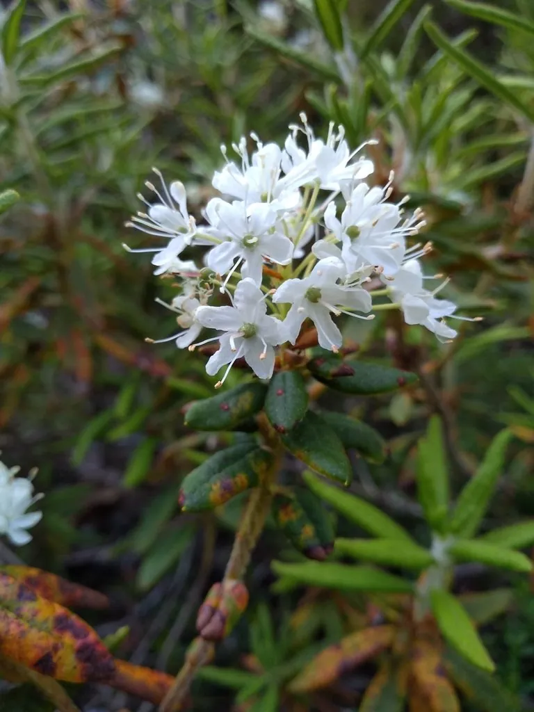

灌木与花木 · 植物界
锦绣杜鹃 Rhododendron pulchrum

杜鹃花科半常绿灌木，春季开粉红至紫红色漏斗状花，花量繁密，是江南园林与城市绿篱的常见花木。
- 分类
- 门被子植物门纲木兰纲目杜鹃花目科杜鹃花科属杜鹃花属
- 栖息环境
- 江南丘陵林缘、庭院与城市绿地，喜半阴和酸性土
- 地理分布
- 中国长江以南广泛栽培，以江苏、浙江、江西等地最常见
- 保护级别
- 暂无评估；中国未列入国家重点保护野生植物名录
物种志
锦绣杜鹃为杜鹃花科杜鹃花属半常绿灌木，高 1–2 米，枝条开展，幼枝密被褐色毛。叶互生，椭圆形至披针形，革质，表面深绿色。花 2–5 朵簇生于枝顶，花冠漏斗状，粉红色至紫红色，内面有深色斑点，花期 4–5 月；果实为蒴果，圆柱形，果期 9–10 月。
锦绣杜鹃原产中国，是白花杜鹃与毛白杜鹃的杂交种，江南各地广泛栽培。它喜温暖湿润、半阴的环境，怕强光暴晒和积水，适宜疏松肥沃、排水良好的酸性土壤。花期花量繁密，色彩艳丽，是江南园林、城市绿篱与庭院的常见花木；栽培中需注意修剪残花、防治杜鹃叶斑病与红蜘蛛，北方盆栽冬季需移入室内。
形态与习性
- 株高1–2 米，枝条开展
- 花期4–5 月，花冠漏斗状
- 果期9–10 月，蒴果圆柱形
- 光照喜半阴，忌强光暴晒
- 水分喜湿润，忌积水
- 土壤疏松肥沃、排水良好的酸性土
- 主要用途园林观花、城市绿篱与盆栽
趣味知识
- 锦绣杜鹃是白花杜鹃与毛白杜鹃的杂交种，花大而繁密。
- 它的花冠内面有深色斑点，是辨认杜鹃品种的特征之一。
- 锦绣杜鹃是江南城市绿篱和公园中最常见的杜鹃之一。
- 杜鹃喜酸性土，栽培时不宜用碱性水长期浇灌。